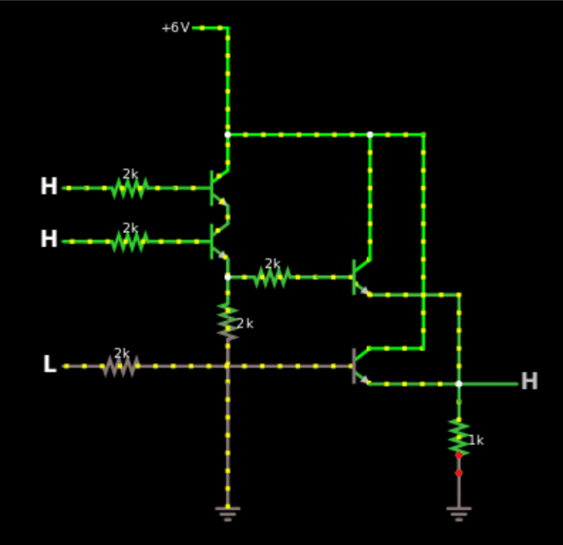
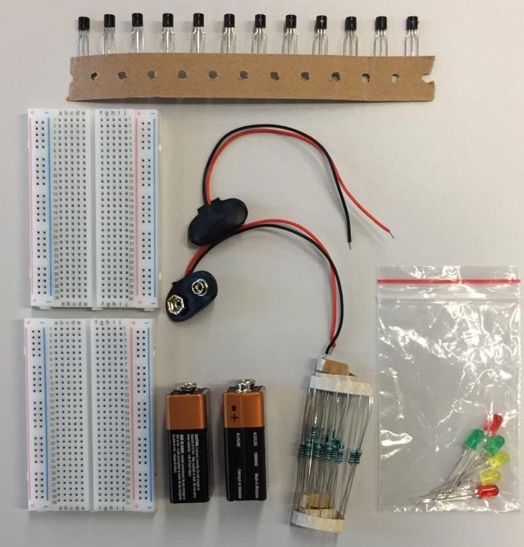
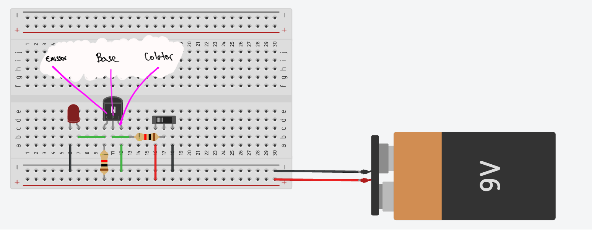
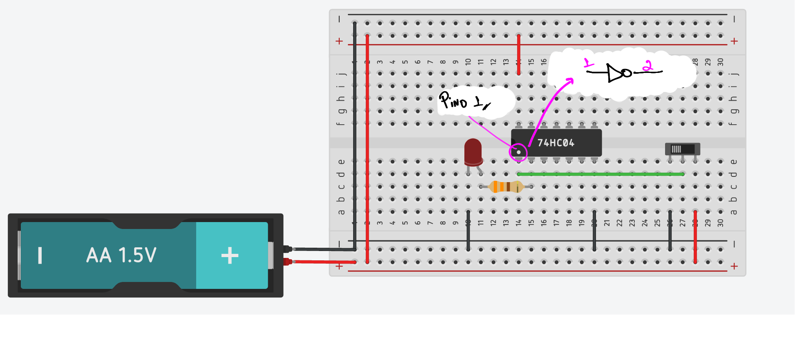

Lab 4: Transistores / CI
Esse laboratório tem como objetivo trabalhar com os conceitos básicos de portas lógicas do tipo RTL realizadas a base de transistores discretos do tipo BJT e também trabalhar com componentes integrados (CI) da família CMOS.
Existem basicamente três níveis de simulação de componentes eletrônicos: a primeira, puramente lógica utiliza de portas lógicas "ideais" (https://simulator.io/board). Um simulador mais preciso irá utilizar transistores para a implementação dessas portas lógicas porém não leva em consideração todos os fatores físicos-eletrônicos dos componentes (http://falstad.com/circuit/). Já um simulador que leva em consideração as propriedades dos componentes é chamado de SPICE e irá gerar uma simulação mais precisa em termos físicos do circuito original (http://circuitlab.com).
Parte 1 - Circuito misterioso
Vamos usar o simulador do site falstad para implementar um circuito feito com transistores que implementa uma equação booleana.
- Abra o site: http://www.falstad.com/circuit/
-
 Arquivo Importar Arquivo Texto Copiar e colar o texto a seguir
Arquivo Importar Arquivo Texto Copiar e colar o texto a seguir
Vocês devem obter o seguinte diagrama:

Com o circuito carreado no site, encontre:
Tarefa
- Encontre a tabela verdade do circuito.
- Faça todas as combinações possíveis de entradas (H/L) e verifique o valor da saída (H/L)
- A partir da tabela verdade encontre a equação lógica.
- Desenhar o diagrama da equação (simplificado).
Outro circuito misterioso
Implementar o outro circuito feito com transistores que implementa uma equação booleana no simulador do site falstad.
- Abra o site: http://www.falstad.com/circuit/
- Arquivo Importar Arquivo Texto Copiar e colar o texto a seguir
Parte 2 - RTL
Iremos implementar portas lógicas e equações booleanas com transistores BJT. Para isso vamos utilizar o TinkerCad, que irá permitir realizarmos uma montagem similar a que seria feito no laboratório.
Material
Cada grupo receberá:
- Duas protoboards
- Duas baterias 9V
- Jumpers macho-macho
- 12 transistores BJT-N BC337
- 24 resistores de 2k
- 6 LEDs coloridos (Vermelho, amarelo e verde)

Trabalhando
O grupo deve se organizar e executar da melhor forma possível (com todos participando) os módulos a seguir, utilizando:
- Entradas: Utilizar como entrada do sistema (A,B,C,...) jumpers que estarão hora conectados em GND (0) ou VCC (1).
- Saídas: A saída final do sistema deve ser representada com um LED, sendo aceso indicando lógica
1e apagado lógica0. - Validação: Uma tabela verdade do circuito deve ser apresentada e em aula demonstrado que o circuito representa a tabela.
a - NOT
Info
Cada grupo deve realizar duas implementações do circuito a seguir que representa uma NOT:
Iremos implementar uma porta lógica do tipo NOT usando transistores BJT.

Para isso vocês deverão:
- Entrar no site TinkerCad
- Logar (com google) e criar conta pessoal
- Circuis Criar novo Circuito
- Fazer a implementação a seguir

Warning
Se você perceber que algum transistor está aquecendo, desconecte a bateria e verifique novamente a montagem. Isso é um sinal que alguma coisa está errada.
Tip
-
Utilize o datasheet do transistor para entender a montagem
-
Mexa na chave para aplicar
0ou1na entrada do circuito.
Tip
O fio 'rosa' da imagem anterior representa a entrada do seu circuito, você deve colocar ela em GND para simular uma entrada 0 e em VCC para simular uma entrada 1.
1b - NOT NOT
Agora que as duas NOT foram implementadas, testadas e estão funcionado, conecte a saída de uma na entrada da outra. Isso vai fazer com que a saída siga o valor de referência da entrada.
b - OR
c - Equação
Circuitos Integrados - CI
Circuitos integrados são componentes eletrônicos que possuem internamente dezenas a milhares de transistores que implementam circuitos eletrônicos, facilitando e possibilitando o desenvolvimento de projetos de hardware mais complexos.
Existem várias 'famílias' de CI que implementam portas lógicas, iremos trabalhar com uma versão chamada de série TTL 7400. Exemplos de componentes dessa famílias:
- 7400: Quatro portas NAND de duas entradas
- 7401: Quatro portas NAND de duas entradas com coletor aberto
- 7402: Quatro portas NOR de duas entradas
- 7403: Quatro portas NAND de duas entradas com coletor aberto
- 7404: Seis inversores (porta NOT)
Para a lista completa acesse: https://pt.wikipedia.org/wiki/Lista_dos_circuitos_integrados_da_s%C3%A9rie_7400
Vamos continuar no TinkerCad.
a - NOT
Vamos usar o componente 7404 que possui 6 NOTs para fazer a mesma coisa que fizemos com os transistor discreto:


b - Equação
Implemente a equação a seguir com CIs da família 74xx.
Q = (A xor B) or not(C)
Tip
- Identifique os componentes
- Procure na lista qual o seu nome
- Analise os pinos desse componente
- Faça a ligação e teste por parte